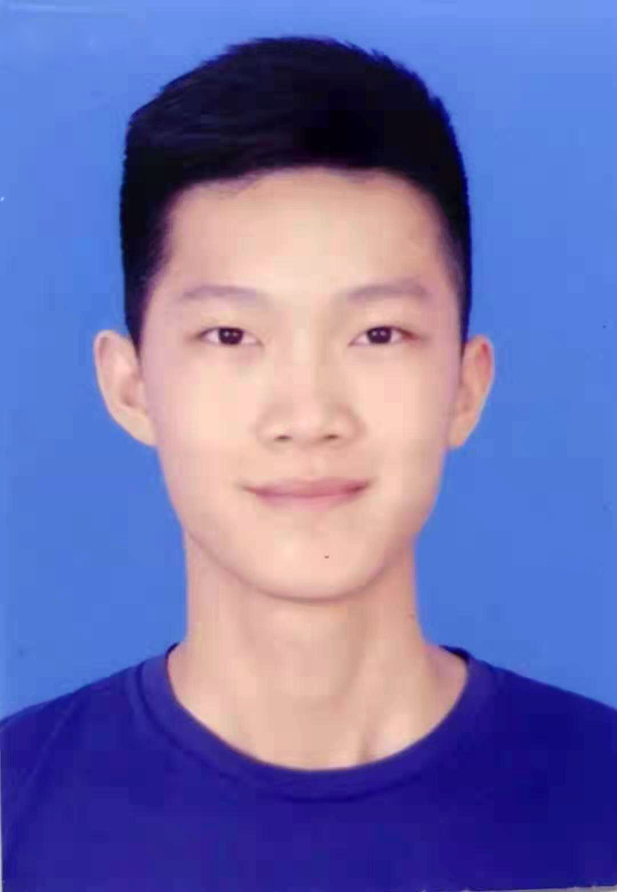
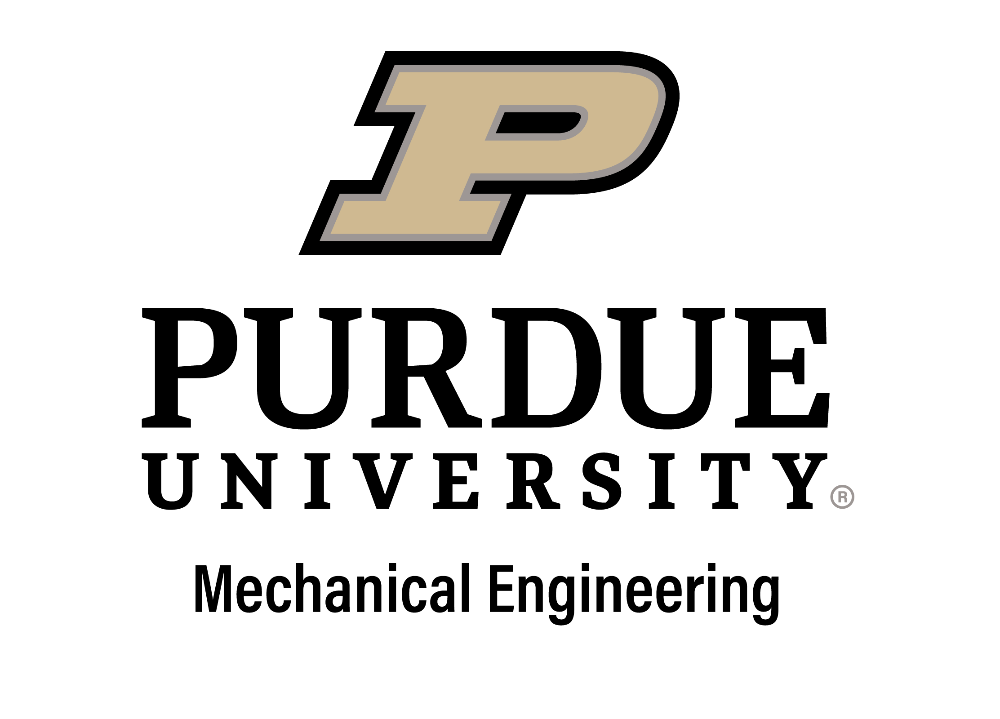
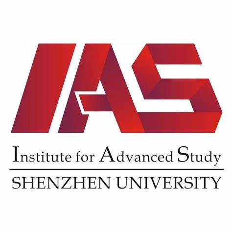

Shenghao Zhang
|  | Undergraduate |
ABOUT ME
我目前在中南大学计算机学院攻读博士学位，师从胡志刚教授。 本人已于2022年6月从中南大学 计算机学院获得硕士学位。 在此之前, 我于2019年6月在 中南民族大学 计算机科学学院 智能科学与技术专业获得了学士学位, 专业排名:(1/56)。
我的研究兴趣主要包括: 图神经网络, 图数据挖掘, 机器学习, 智慧交通, 无线传感器网络, 边缘计算，云计算 等。
EDUCATION EXPERIENCE
|  | Visiting Scholar Birck Nanotechnology Center, Purdue University(2022.7 ~ 2022.11)
|
|  | B.S Shenzhen University Guangdong Province, China (2019.9 ~ 2023.6)
|
PUBLICATIONS
Ultrapermeable Nanofiltration Membranes with Tunable Selectivity Fabricated with Polyaniline Nanofibers
Ji C, Lin C-W, Zhang S, Guo Y, Yang Z, Hu W, Xue S, Q.Jason Niu and Richard B.Kaner
Journal of Materials Chemistry A[JMCA], 2022;10(8):4392-401
Tailored thin film nanocomposite membrane incorporated with Noria for simultaneously overcoming the permeability-selectivity trade-off and the membrane fouling in nanofiltration process
Yang Z, Li L, Jiang C, Zhao N, Zhang S, Guo Y, Chen Y, Xue S, Ji C, Zhao S, Ralph Rolly Gonzales, Hitedo Matsuyama, Xia J and Q. Jason Niu
Journal of Membrane Science[JMS]. 2021;640.(1)
An Optimal Deployment Scheme for Extremely Fast Charging Stations
Ping Zhong, AiKun Xu, Yilin Kang, Shigeng Zhang and Yiming Zhang
Peer-to-Peer Networking and Applications (P2PNA), 2022. Accepted, [JCR Q2][PDF]
An Optimization Deployment Scheme for Static Charging Piles Based on Dynamic of Shared E-Bikes
Ping Zhong, AiKun Xu, Yuanming Chen, Feng Gao and Guihua Duan
2019 15th International Conference on Mobile Ad-Hoc and Sensor Networks (MSN-19). [CCF C][PDF]
THAN: Multi-Modal Transportation Recommendation with Heterogeneous Graph Attention Networks
AiKun Xu, Ping Zhong, Yilin Kang, Jiongqiang Duan, Mingming Lu and Chuan Shi
IEEE Transactions on Intelligent Transportation Systems (T-ITS), 2022. Accepted, [JCR Q1]
GTTE: A GPS Trajectory based Travel Time Estimation Method Through Spatio-Temporal GNN
Ping Zhong, Anning, Wang, AiKun Xu, Mingming Lu, Senzhang Wang and Yingwen Chen
Under Review,